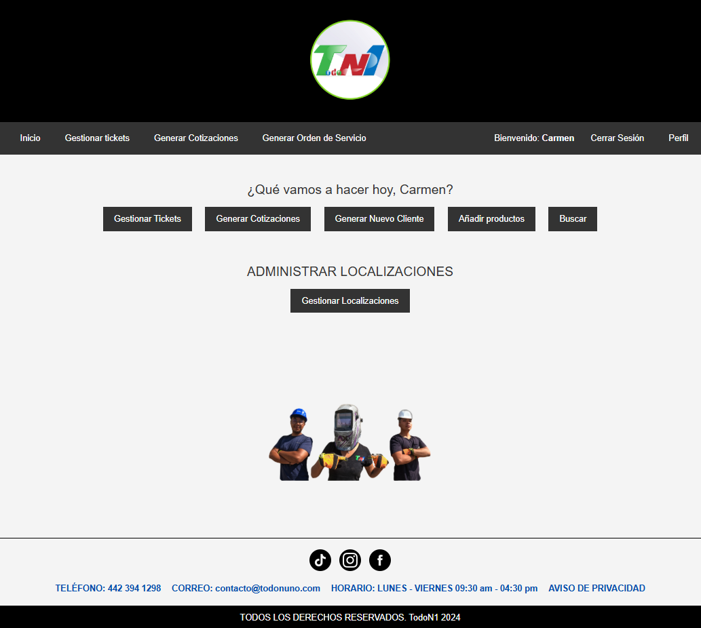
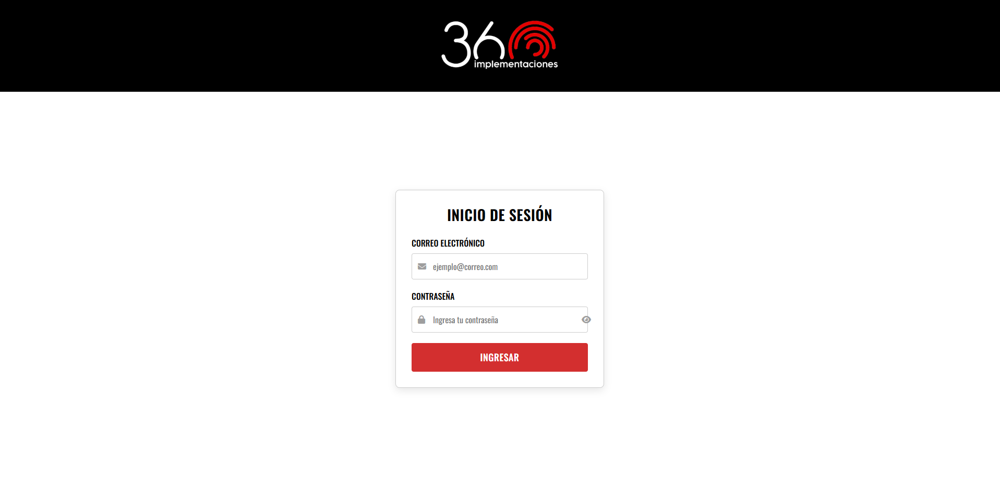
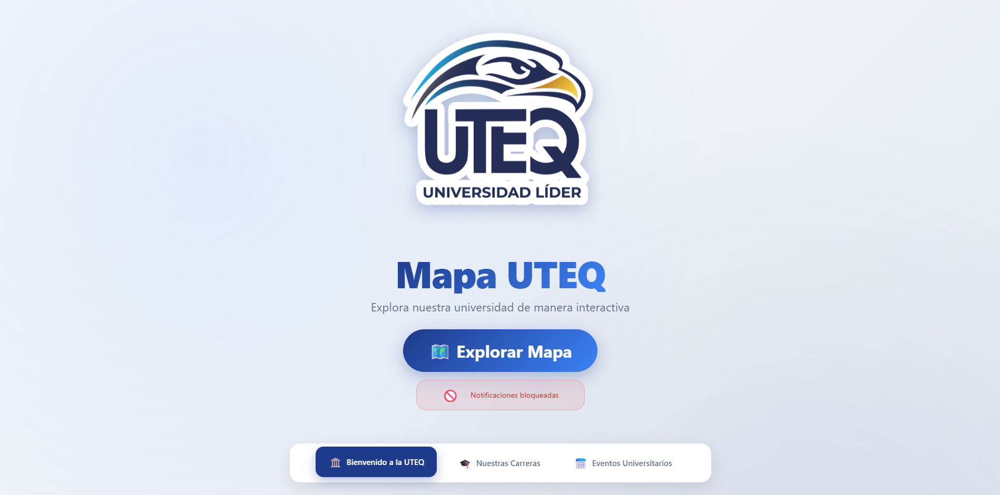

Proyectos Destacados
Aplicaciones reales construidas y desplegadas

TodoN1
|
TodoN1
|

Sistema con dashboard, órdenes, cotizaciones y métricas analíticas.

Implementaciones 360 |
Automatización de cotizaciones, inventario y notificaciones por email.

UTEQ |
Sistema geoespacial galardonado en la Universidad Tecnológica de Qro.